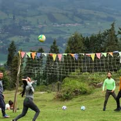
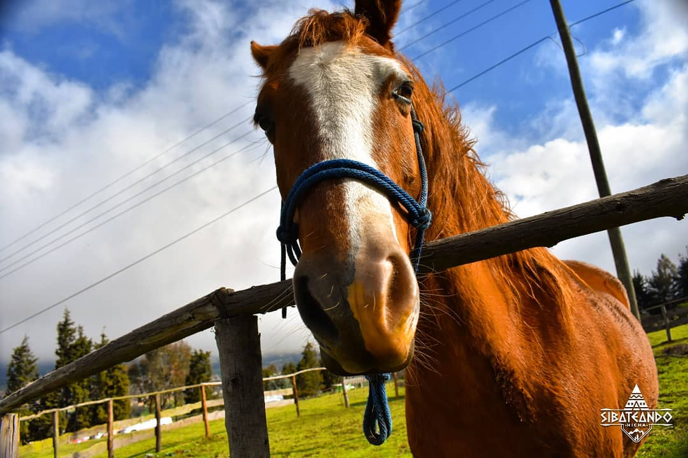
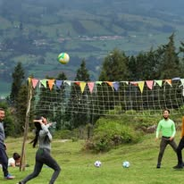
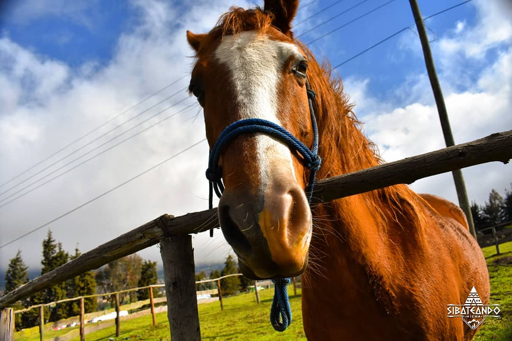
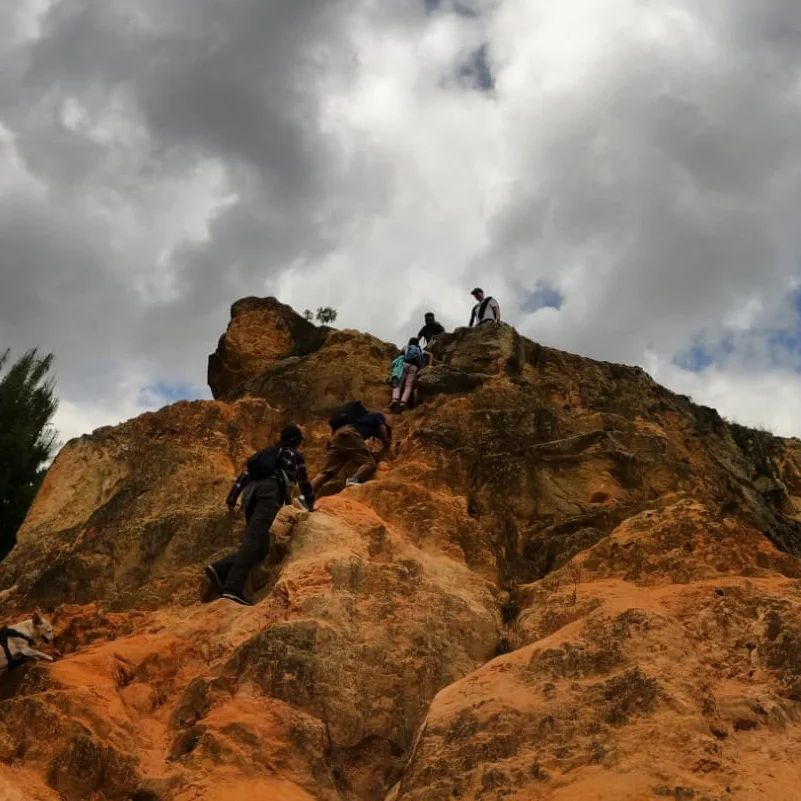
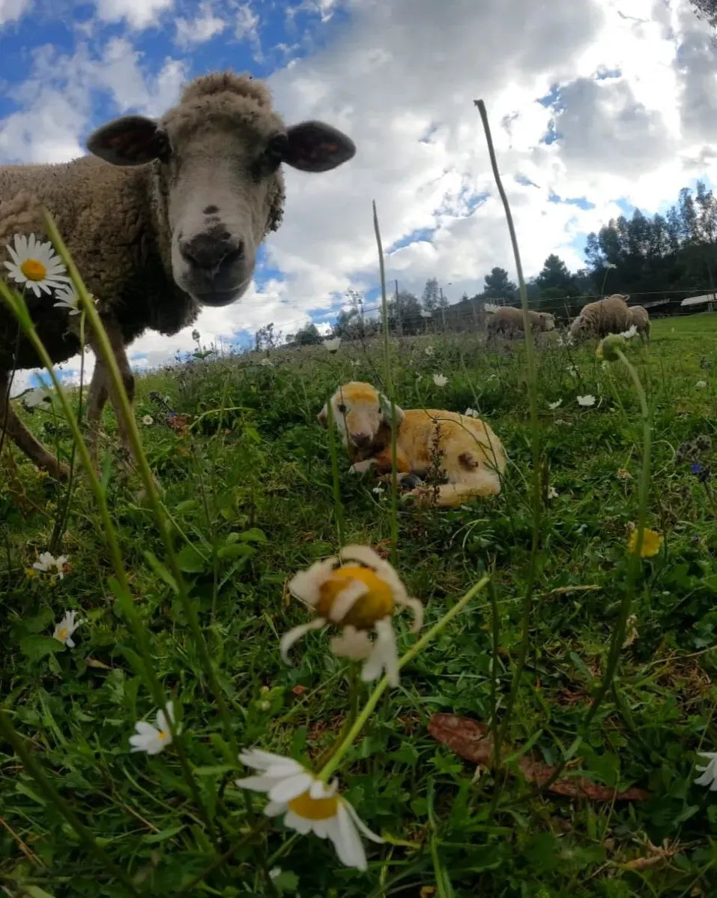
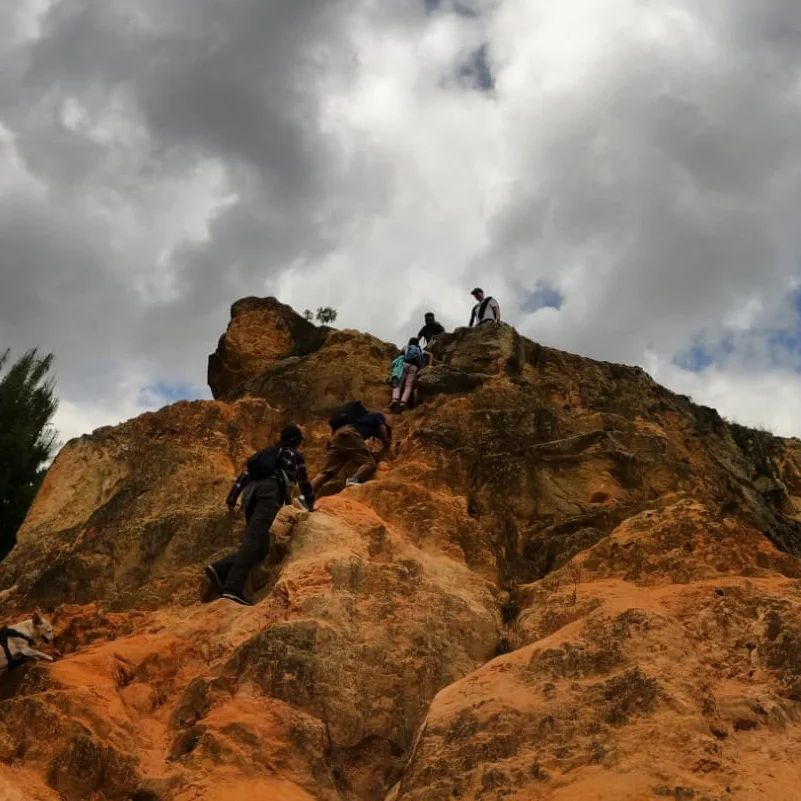
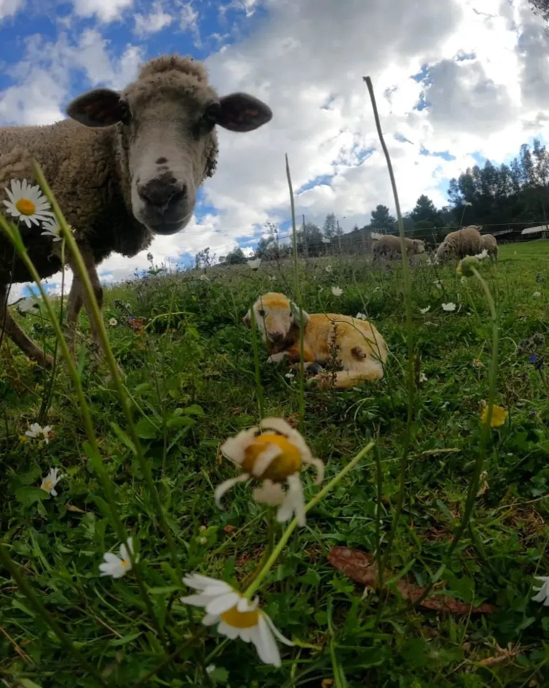

Descubre el encanto de Sibatiando
El Plan Cicloturístico Soacha – Mirador de Cerezas – Parque Sibatiando es una experiencia única que une el deporte, la ecología y la cultura. Pedalea por rutas rurales, contempla paisajes naturales y degusta platos típicos en un entorno ecológico y seguro.
 



 


